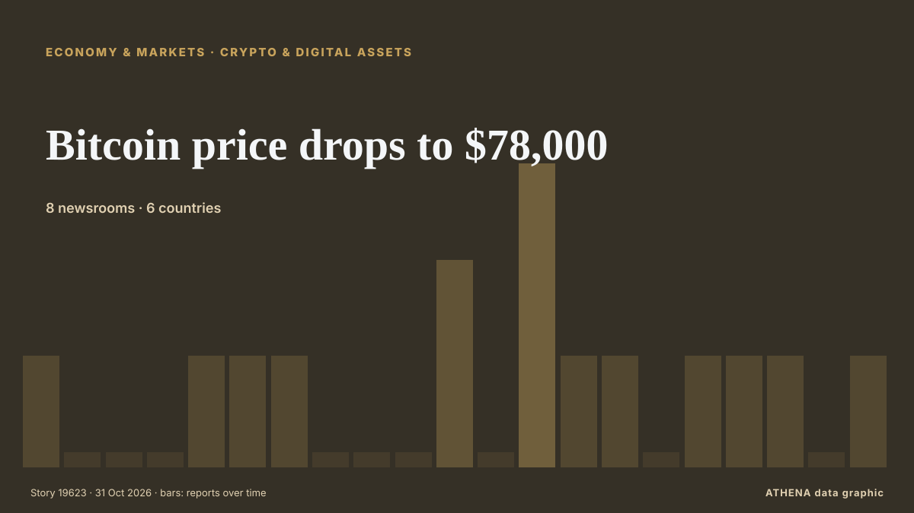

الاقتصاد والمال والأسواق
تُعرض العناوين بالإنجليزية كما نُشرت.
مراقب الأسواق - أرقام رسمية
اتجاه المؤشرات الرسمية للأسواق - صعودًا أو هبوطًا أو استقرارًا - مع آخر قيمة رسمية وتاريخها، وأخبار الأسواق التي تحققت منها ATHENA. أرقام رسمية وليست أسعارًا لحظية.
الطاقة
| يوم | أسبوع | شهر | القيمة الرسمية | |
|---|---|---|---|---|
| Brent crude | ▼ | ▲ | ▲ | $123.10/bblبيانات رسمية بتاريخ 27 أكتوبر 2026 |
| WTI crude | ▼ | ▼ | ▲ | $103.37/bblبيانات رسمية بتاريخ 27 أكتوبر 2026 |
| US natural gas (Henry Hub) | ▲ | ▼ | ▼ | حركة غير معتادة $2.76/MMBtuبيانات رسمية بتاريخ 27 أكتوبر 2026 |
| European natural gas (شهر · 3 أشهر · 12 شهرًا)(شهر · 3 أشهر · 12 شهرًا) | ▲ | ▲ | ▲ | $25.49/MMBtuبيانات رسمية بتاريخ 1 سبتمبر 2026 |
| Coal (Australia) (شهر · 3 أشهر · 12 شهرًا)(شهر · 3 أشهر · 12 شهرًا) | ▲ | ▲ | ▲ | $153.84/tبيانات رسمية بتاريخ 1 سبتمبر 2026 |
الغذاء
| شهر | 3 أشهر | 12 شهرًا | القيمة الرسمية | |
|---|---|---|---|---|
| Wheat | ▲ | ▲ | ▲ | $246.85/tبيانات رسمية بتاريخ 1 سبتمبر 2026 |
أسواق الأسهم الأمريكية
| يوم | أسبوع | شهر | القيمة الرسمية | |
|---|---|---|---|---|
| S&P 500 | ▼ | ▲ | ▲ | الاتجاه فقط (المؤشر © Cboe)بيانات رسمية بتاريخ 29 أكتوبر 2026 |
| Nasdaq Composite | ▼ | ▲ | ▼ | الاتجاه فقط (المؤشر © Cboe)بيانات رسمية بتاريخ 29 أكتوبر 2026 |
الفائدة والمخاطر والدولار
| يوم | أسبوع | شهر | القيمة الرسمية | |
|---|---|---|---|---|
| US 10-year Treasury yield | ▼ | ▲ | ▼ | 4.98 %بيانات رسمية بتاريخ 29 أكتوبر 2026 |
| Market volatility (VIX) | ▲ | ▼ | ▲ | الاتجاه فقط (المؤشر © Cboe)بيانات رسمية بتاريخ 29 أكتوبر 2026 |
| US dollar, broad index | ▬ | ▬ | ▲ | 121.32بيانات رسمية بتاريخ 23 أكتوبر 2026 |
اليورو مقابل العملات الأخرى
| يوم | أسبوع | شهر | القيمة الرسمية | |
|---|---|---|---|---|
| EUR/USD | ▲ | ▼ | ▼ | 1.1172 USDبيانات رسمية بتاريخ 30 أكتوبر 2026 |
| EUR/GBP | ▼ | ▼ | ▼ | 0.8338 GBPبيانات رسمية بتاريخ 30 أكتوبر 2026 |
| EUR/CHF | ▼ | ▼ | ▼ | 0.9194 CHFبيانات رسمية بتاريخ 30 أكتوبر 2026 |
| EUR/JPY | ▼ | ▲ | ▼ | 175.68 JPYبيانات رسمية بتاريخ 30 أكتوبر 2026 |
| EUR/CNY | ▲ | ▼ | ▼ | 7.4326 CNYبيانات رسمية بتاريخ 30 أكتوبر 2026 |
| EUR/TRY | ▲ | ▲ | ▲ | 55.801 TRYبيانات رسمية بتاريخ 30 أكتوبر 2026 |
| EUR/NOK | ▼ | ▼ | ▼ | 10.3120 NOKبيانات رسمية بتاريخ 30 أكتوبر 2026 |
المصادر: إدارة معلومات الطاقة الأمريكية (النفط، الغاز الأمريكي)، صندوق النقد الدولي (الغاز الأوروبي، الفحم، القمح)، وزارة الخزانة والاحتياطي الفيدرالي الأمريكيان (عائد السندات لعشر سنوات، مؤشر الدولار) وCboe (VIX), S&P Dow Jones Indices (S&P 500), Nasdaq (Nasdaq Composite)، عبر FRED (الاحتياطي الفيدرالي في سانت لويس)؛ أسعار اليورو المرجعية © البنك المركزي الأوروبي. الأرقام هي آخر القيم الرسمية مع تاريخها، وليست أسعارًا لحظية. تحسب ATHENA الاتجاهات.
العملات المشفّرة وصناديق المؤشرات والأسهم في الأخبار
- Jaishankar meets US Secretary of State Marco Rubio on sidelines of G20: 'Took stock of our bilateral cooperation’ الخطر 1.3 31 أكتوبر
- Bitcoin price drops to $78,000 الخطر 1.1 31 أكتوبر
- Crypto exchanges call for quick moves to bolster defences after Binance heist الخطر 1.1 31 أكتوبر
- As it happened: Binance’s record $6.3B crypto hack الخطر 3.3 31 أكتوبر
- S&P Global revises Meta’s outlook to ‘negative’ on AI spending الخطر 1.7 31 أكتوبر
- The sell-off for tech stocks worsens and overwhelms Wall Street الخطر 5.3 31 أكتوبر
- Colombia Stocks Fall 0.63% as Peso Slips | Colombia Market Report, Oct 29 الخطر 0.0 30 أكتوبر
- Bitcoin slides below $77,000, BNB drops amid Binance hack الخطر 1.3 30 أكتوبر
- Intel’s stock crashes, knocking $12B from government’s stake الخطر 0.0 30 أكتوبر
- Anthropic expected to receive high ‘junk’ rating from credit agencies following IPO, report says الخطر 2.0 30 أكتوبر

العملات المشفرة والأصول الرقميةBitcoin price drops to $78,000
نشرته 8 مصادر في 6 دول منذ 21 أكتوبر. أول من نشره: VnExpress International. يقدّر ATHENA الخطر بـ1.1/10 (منخفض)، بثقة 86٪.
| 18 أكتوبر | 10 |
|---|---|
| 19 أكتوبر | 39 |
| 20 أكتوبر | 9 |
| 21 أكتوبر | 34 |
| 22 أكتوبر | 82 |
| 23 أكتوبر | 59 |
| 24 أكتوبر | 29 |
| 25 أكتوبر | 32 |
| 26 أكتوبر | 123 |
| 27 أكتوبر | 132 |
| 28 أكتوبر | 125 |
| 29 أكتوبر | 89 |
| 30 أكتوبر | 92 |
| 31 أكتوبر | 5 |
Minutes of the monetary policy meeting on 16 June 2026
Associated Press Of Pakistan State Bank Governor Jameel Ahmad announces the monetary policy decision at a press conference. من APP (Associated Press of Pakistan)
Evening News Brief October 30: Uttarakhand chopper crash, mega Binance crypto heist and more top stories
Fed holds main interest rate steady despite accelerating inflation
Two policymakers on the Federal Open Market Committee dissented in favor of raising the federal funds rate by 0.25 percentage point. من Supply Chain Dive
Dakar Rally 2027 will be held in Portugal and Morocco, say organisers
The Dakar Rally was moved from Saudi Arabia to Portugal and Morocco over security concerns stemming from Houthi attacks and the war in the Middle East. من Free Malaysia Today
Robert Abela Thanks Christine Lagarde For Her Leadership As ECB President
European Central Bank President Christine Lagarde will step down on Feb. من CNBC Economy
Unilever hiking prices as commodity costs soar amid Iran conflict
The consumer goods firm revealed underlying sales grew by 5.2% in the three months to September 30, of which 2.3% was due to higher prices. من Evening Standard (London)
Sri Lanka’s inflation climbs to 8.3%
Inflation in Sri Lanka increased to 8.3% in October, up from 8.0% recorded in September, according to the Colombo Consumer Price Index (CCPI), the Department of Census and Statistics said. من Daily Mirror
French Economy Shrinks 0.1% as Exports Fall
France's economy shrank 0.1% from July to September as exports fell 1.7%, Insee said, while dockworkers began a 24-hour national strike. من The Rio Times
PAG to buy 51% stake in Evergrande Property Services for $514 million
Asia-focused investment firm PAG will acquire a 51% stake in Evergrande Property Services Group , a unit of debt-laden developer China Evergrande Group, for HK$4.03 billion ($514 million), the two… من Business Recorder
Jio’s blockbuster debut puts valuation, earnings in focus
India’s second-most valuable listed company now needs to show investors the money. من The Business Times
Yen steady before BOJ, AI jitters drive Treasury rally, weigh on dollar
HONG KONG: The yen was steady on Friday ahead of the Bank of Japan’s policy decision, while the dollar tracked Treasury yields lower as a fresh wave of selling in AI shares triggered a flight to… من Business Recorder
Shares in Google owner Alphabet plummet on profit miss, ad slowdown
WASHINGTON: Shares in Google parent Alphabet fell more than 10 per cent in after-hours trading on Wednesday as the company reported lower-than-expected profit and a slowdown in its advertising… من New Straits Times
Philippines may use more tools to stem peso slide, analysts say
By Ditas B. Lopez, Bloomberg The Philippine peso’s nearly 8% slide against the dollar this year may prompt… من BusinessWorld
Sonia Gandhi makes Instagram debut, shares first look of upcoming memoir ‘Belonging: A Journey Of Love’
In her first post, Sonia Gandhi described the memoir as a story of “love, duty, loss and finding a place to belong” من Hindustan Times
Seoul stocks open lower on Wall Street losses, AI concerns
South Korean stocks opened lower Friday, tracking overnight losses on Wall Street, as renewed concerns over the sustainability of the artificial intelligence (AI) boom weighed on investor sentiment. من Korea Herald
Pentagon’s US$1.5 Trillion Budget Explained
The Pentagon wants US$1.5 trillion for fiscal 2027, but US$350 billion hinges on a party-line vote. من The Rio Times
(2nd LD) Sept. industrial output growth hits 15-yr high on chips; retail sales, investment also up
SEOUL, Oct. 30 (Yonhap) -- South Korea's industrial output expanded in September... من Yonhap (English)
US economy posts strong growth, inflation stubbornly high in challenge to Trump
WASHINGTON, United States (AFP) — The United States posted strong economic growth in the third quarter, but the Fed's preferred inflation gauge also accelerated, the Commerce Department said on… من Jamaica Observer
US national debt hits record high of over $40.5 trillion
The debt has increased by $20 trillion in less than a decade. من TASS (English)
US senator calls for accountability over Israel’s killing of 9 Americans in occupied West Bank
‘Nine American citizens dead. No accountability,’ says Chris Van Hollen. من Anadolu Agency (English)
Asian shares fall after Alphabet earnings miss forecasts
MSCI's broadest index of Asia-Pacific shares outside Japan dropped 0.7%, while Japan's Nikkei trimmed gains to be up 0.3%. من Free Malaysia Today
Venezuelan leader demands Bank of England return gold
CARACAS, Venezuela (AFP) — Venezuelan interim president Delcy Rodriguez demanded Wednesday the return of her country's gold reserves held at the Bank of England, where they were frozen more than six… من Jamaica Observer
Revolut takes on high street banks with launch of personal loans in UK
The unsecured loans, ranging between £2,000 and £25,000, offer ‘near-instant’ funds after approval. من Evening Standard (London)
UN probe accuses Israel of 'extermination' in West Bank
GENEVA, Switzerland — Israel has committed the crime against humanity of "extermination" in the West Bank, while continuing to commit "genocide" against Palestinians in the Gaza Strip, United… من The Korea Times
Budget 2026: John Healey announces £100 energy payment for households, minimum wage rise, and £7.5m for AI and cyber in Belfast
More than a million low-paid workers are set for a pay boost Chancellor John Healey is poised to announce. من WalesOnline
Dangote Refinery’s IPO closes with investors from 120 countries
"This is a historic achievement for Africa. من Vanguard
Election uncertainty rocks markets as Tel Aviv stocks tumble and shekel reverses gains
The TA-35 and TA-125 plunged as election uncertainty erased earlier optimism, while the shekel weakened and government bond yields climbed. من The Jerusalem Post
Budget 2026: How Chancellor John Healey will hammer the City
Chancellor has the Square Mile firmly in his sights in today’s Budget. من Evening Standard (London)
Officials call for reliable, affordable energy to drive industrial growth in Africa
Bulgaria Joins International Initiative to Develop Air Defence Capabilities
Oct 26 - Britain will not join the Canada-led Defence, Security and Resilience Bank, in a setback to efforts to create the world's first global defence bank, according to a person familiar with the… من The Straits Times
US Fed holds interest rates steady despite 'too high' inflation
The US Federal Reserve is expected to keep interest rates unchanged in its upcoming meeting next week. من Times of India
Alphabet shares fall after revenue miss, cash burn worsens
Capital expenditures driven by AI will rise significantly in 2027, says its CFO. من The Business Times